The Skulls Project
米国エッカード大学での活動、世界的施設「ビミニサメ研究所」への標本寄贈。
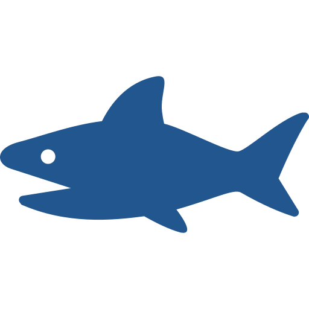
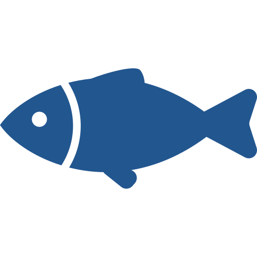
動画・出演クリップ配置エリア
あとでHTMLの動画枠を重ねやすい余白
米国エッカード大学での活動、世界的施設「ビミニサメ研究所」への標本寄贈。
最高峰の国際会議でノコギリエイの研究を発表。
テレビ東京「ありえへん∞世界」で深海魚ハンターとして活躍。
日本全国の漁師さん、日本国内を含める世界中の学者さん達との強い連携
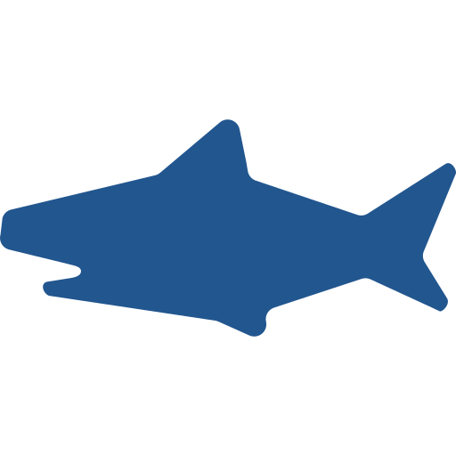
愛と面白さ爆発。マニアックだけど超わかりやすい「サメ・エイ・ギンザメ」のコラム。
テレビでしか見られなかったサメの世界を、もっとリアルに。サメ博士と楽しむ海の体験情報をお届けします。
世界に一つだけ。職人技が光る「サメのあご骨・あたまの骨」の案内。
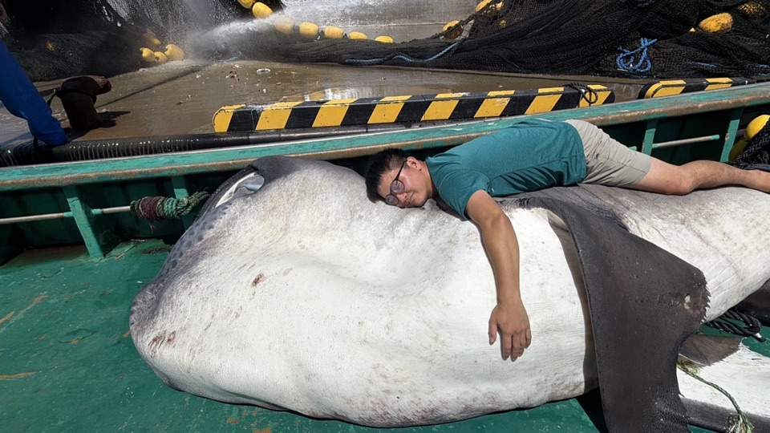
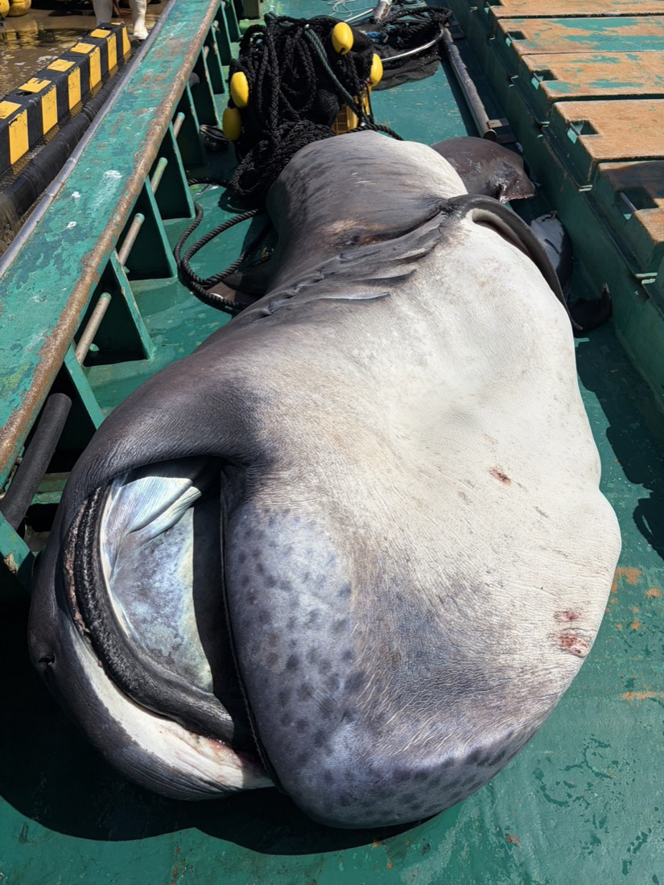
テレビを見て「宋くん」のサメ愛と面白い説明に惹かれた方
サメや深海魚の不思議な生態を、もっと面白く深く知りたい方
子供の知的好奇心を刺激する、楽しくて学びのあるコンテンツを探している方
普段じゃあ味わえない、規格外の「サメ体験」をしてみたい方
知る・釣る・つくる。深海の入口を、もっと近くに。
地元の漁業関係者達から、通常は廃棄されるサメの部位を譲り受ける。
長時間の丁寧な作業と漂白剤を用いた、プロ水準の調製。
生き物への敬意とストーリーを添えた、博物館レベルの美しい骨格標本をお届け。
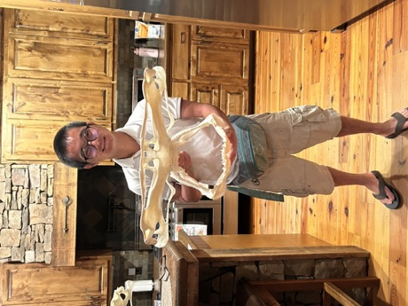
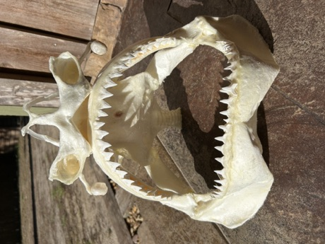
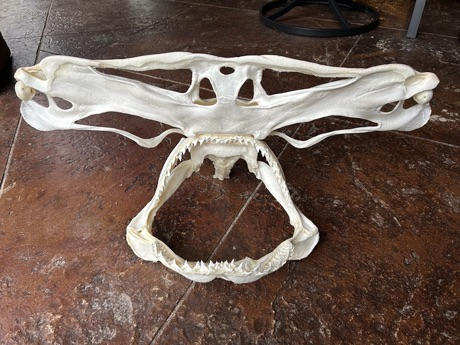
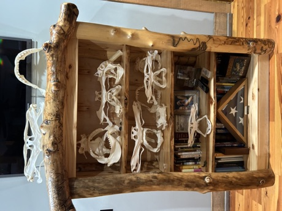
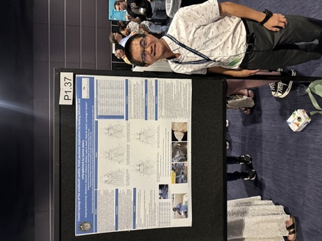
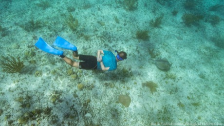
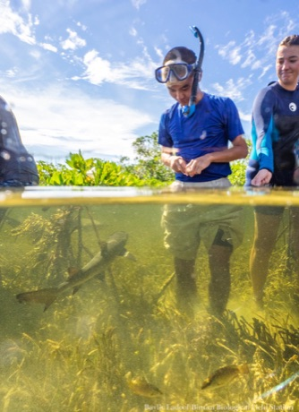
千葉県浦安市出身。米国フロリダ州エッカード大学在学（環境学専攻）。専門は生態学と形態学で、サメの進化・多様性の解明、生態と適応戦略、骨格形態から読み解く機能と進化の関係などを研究している。
これまでに35種類以上のサメの頭骨標本を作成。テレビ東京「ありえへん∞世界」などに深海魚ハンターとして出演し、圧倒的な知識と「愛がある面白い説明」で人気を集める。現場の漁師から国際的な研究機関まで、幅広いネットワークを持つ実践的な活動家。